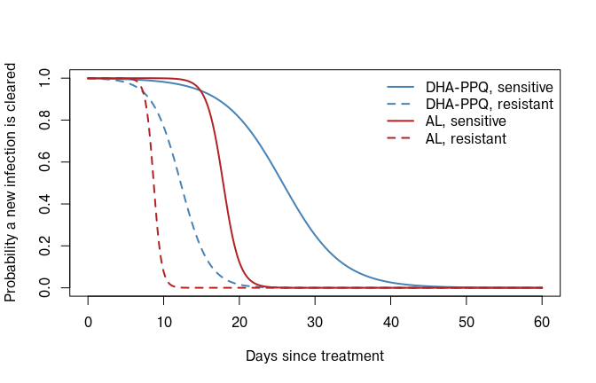
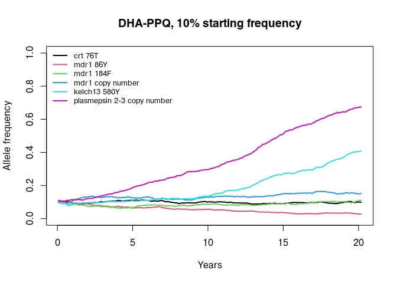
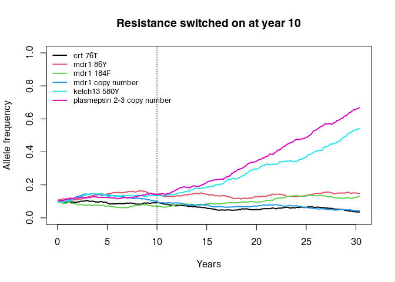
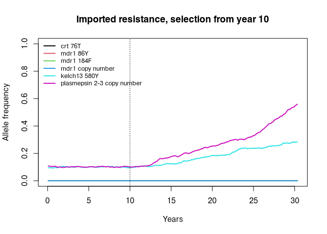
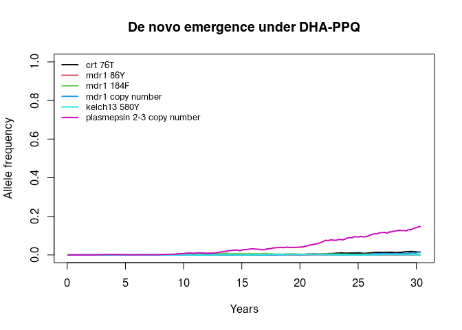
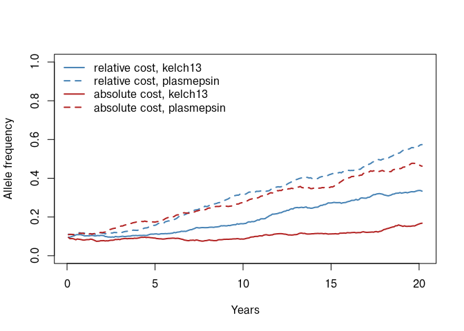
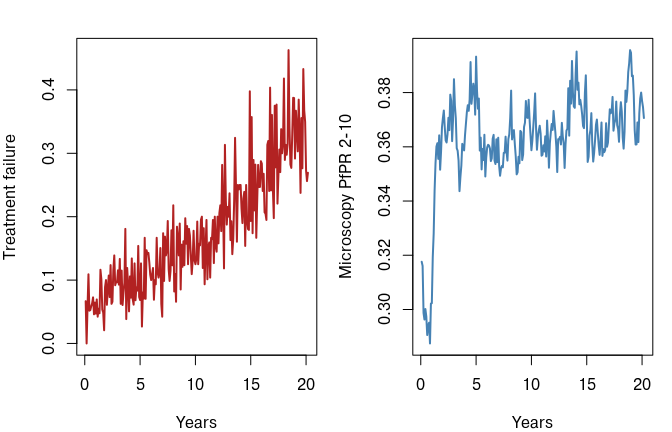

vignettes/Resistance.Rmd
Resistance.Rmdmagenta tracks the genetic barcode of every parasite
strain in every host. If some of the positions in that barcode are
allowed to change how well a drug works, the model becomes a simulation
of antimalarial resistance: drug pressure selects on the barcode, and
the barcode in turn determines who is cured.
This vignette covers the machinery that makes that happen:
Deploying more than one drug at a time, cycling between drugs and the
effect of treating non-malarial fevers are covered separately in the drug strategies vignette. If you want to
represent a drug that magenta does not yet know about, see
adding a new drug. The introduction covers the basics of running
the model and is assumed below.
Resistance in magenta needs two things that are
configured independently.
num_loci argument to pipeline(),
along with plaf, the population level allele frequency used
to generate new barcodes.drug_list_create(), which holds one or more drugs and tells
the model whether resistance is switched on.By default neither is set up for resistance. pipeline()
uses a 24 locus neutral barcode and a hypothetical drug that always
cures, so nobody ever fails treatment:
out <- pipeline(EIR = 10, N = 2000, years = 5, ft = 0.4, seed = 1L)
## Seed set to 1
## magenta v1.3.8
str(out$Loggers$Treatments)
## List of 5
## $ Successful_Treatments : num 1939
## $ Unsuccesful_Treatments_LPF : num 0
## $ Not_Treated : num 2827
## $ daily_bite_counters : int 5716049
## $ daily_infectious_bite_counters: int 70846Unsuccesful_Treatments_LPF counts treatments that ended
in a 28 day late parasitological failure (LPF). It is zero here, and
will stay zero until we give the model a drug that can fail.
The drugs that ship with magenta are built around six
biallelic loci, taken from drug_table. Each locus is either
wild type (0) or resistant (1), and they
occupy barcode positions 0 to 5 in this order:
loci <- c("crt 76T", "mdr1 86Y", "mdr1 184F", "mdr1 copy number",
"kelch13 580Y", "plasmepsin 2-3 copy number")
data.frame(position = 0:5, locus = loci)
## position locus
## 1 0 crt 76T
## 2 1 mdr1 86Y
## 3 2 mdr1 184F
## 4 3 mdr1 copy number
## 5 4 kelch13 580Y
## 6 5 plasmepsin 2-3 copy numberNote that positions are zero indexed, because they index into the barcode on the C++ side. Position 0 is the first element of the barcode vector in R.
drug_table gives the probability that treatment
succeeds for each of the 2^6 = 64 possible
genotypes, for a range of drugs and partner drugs. It is taken from
Nguyen et al., Antimalarial mass drug administration in large
populations and the evolution of drug resistance (doi:10.1101/2021.03.08.434496).
tab <- magenta::drug_table[, c("Genotype", "AL", "ASAQ", "DHAPPQ")]
rownames(tab) <- NULL # the stored row names are from the source csv, not the order
head(tab)
## Genotype AL ASAQ DHAPPQ
## 1 KNY0C0 0.915158 0.962073 0.972486
## 2 TNY0C0 0.929358 0.947158 0.972486
## 3 KYY0C0 0.953453 0.905281 0.972486
## 4 TYY0C0 0.964582 0.891124 0.972486
## 5 KNF0C0 0.889945 0.976982 0.972486
## 6 TNF0C0 0.908054 0.958879 0.972486The Genotype string spells out the six loci in the order
above, so KNY0C0 is the fully wild type parasite and
TYF1Y1 is resistant everywhere. The row order is not
arbitrary: row i is the genotype whose binary
representation is i - 1, with position 0 as the
least significant bit. That is exactly how the C++ code
converts a barcode into an index into the efficacy vector, so the
ordering of drug_table and the ordering of the barcode have
to agree.
We can see the difference each marker makes by pulling out the genotypes that carry a single resistant locus:
single <- 2^(0:5) + 1
eff <- magenta::drug_table[c(1, single), c("Genotype", "AL", "ASAQ", "DHAPPQ")]
eff$locus <- c("wild type", loci)
rownames(eff) <- NULL
eff
## Genotype AL ASAQ DHAPPQ locus
## 1 KNY0C0 0.915158 0.962073 0.972486 wild type
## 2 TNY0C0 0.929358 0.947158 0.972486 crt 76T
## 3 KYY0C0 0.953453 0.905281 0.972486 mdr1 86Y
## 4 KNF0C0 0.889945 0.976982 0.972486 mdr1 184F
## 5 KNY1C0 0.858645 0.962073 0.972486 mdr1 copy number
## 6 KNY0Y0 0.795336 0.895737 0.928664 kelch13 580Y
## 7 KNY0C1 0.915158 0.962073 0.768484 plasmepsin 2-3 copy numberKelch13 580Y (position 4) and the plasmepsin 2-3 duplication (position 5) are the two that matter for DHA-PPQ, which is why that combination is the one to reach for when simulating artemisinin and piperaquine resistance. The crt and mdr1 markers drive lumefantrine and amodiaquine resistance, and so act on AL and ASAQ.
A drug is a list of properties created by drug_create().
The package ships with constructors for the three most used first line
therapies, drug_create_al(),
drug_create_asaq() and drug_create_dhappq(),
plus drug_create_default_no_resistance() for the perfect
drug used above. They are currently internal, so they are called with
magenta::::
dhappq <- magenta:::drug_create_dhappq()
str(dhappq)
## List of 9
## $ lpf : num [1:64] 0.972 0.972 0.972 0.972 0.972 ...
## $ barcode_positions : int [1:6] 0 1 2 3 4 5
## $ prophylactic_positions: num 5
## $ dur_P : num 25
## $ dur_SPC : num 9
## $ hill_n : num 4.42
## $ hill_kA : num 0.227
## $ hill_res_n : num 9.27
## $ hill_res_kA : num 0.493Each element does the following.
lpf is the probability that treatment
succeeds, one entry per genotype. Despite the name, it
is not the probability of late parasitological failure; the model uses
1 - lpf for that. A value of 1 is a drug that
always cures that genotype.barcode_positions are the barcode
positions that index into lpf. With six positions,
lpf must have 2^6 = 64 entries.prophylactic_positions are the
positions that shorten the period of post-treatment protection. These
are the partner drug markers: position 5 (plasmepsin) for DHA-PPQ, and
positions 0 to 3 (crt and mdr1) for AL and ASAQ.dur_P is the mean duration of
prophylaxis in days and dur_SPC the
duration of slow parasite clearance, applied to artemisinin resistant
infections that are nevertheless cured.hill_* parameters are fitted
inside drug_create(), and are described next.When an individual is treated, magenta looks up the
probability of failure for every strain they are carrying and takes the
largest of them. A subpatent strain never causes
failure. If the draw fails, the surviving strains are kept and the
individual moves back to asymptomatic rather than into prophylaxis. If
the draw succeeds but the individual carries a strain resistant at any
of the drug’s positions, they spend an extra dur_SPC days
in the treated state before moving to prophylaxis.
An asymptomatic strain’s failure probability is also discounted according to how far through its course it is, so that a strain close to clearing on its own is less likely to survive treatment. Up to version 1.3.7 that discount silently did nothing, because the fraction was computed with integer arithmetic and truncated to zero for any strain partway through its course; it takes effect from 1.3.8.
After a successful treatment an individual sits in the P
state, where a new infectious bite can still be cleared by the residual
partner drug. magenta models this as a declining
concentration passed through a Hill function, giving the probability
that a challenge is cleared. drug_create() fits that Hill
function to a protection curve you supply, and fits a
second one for parasites that are resistant at the
prophylactic positions.
protection <- function(drug, days = seq(0, 60, 0.2)) {
# concentration decays exponentially with median equal to the half life
conc <- dexp(days, 1 / (log(2) * drug$dur_P))
conc <- conc / max(conc)
hill <- function(x, n, kA) (x^n) / (x^n + kA^n)
data.frame(days = days,
sensitive = hill(conc, drug$hill_n, drug$hill_kA),
resistant = hill(conc, drug$hill_res_n, drug$hill_res_kA))
}
p_dhappq <- protection(dhappq)
p_al <- protection(magenta:::drug_create_al())
plot(p_dhappq$days, p_dhappq$sensitive, type = "l", lwd = 2, col = "steelblue",
ylim = c(0, 1), xlab = "Days since treatment",
ylab = "Probability a new infection is cleared")
lines(p_dhappq$days, p_dhappq$resistant, lwd = 2, lty = 2, col = "steelblue")
lines(p_al$days, p_al$sensitive, lwd = 2, col = "firebrick")
lines(p_al$days, p_al$resistant, lwd = 2, lty = 2, col = "firebrick")
legend("topright", bty = "n",
legend = c("DHA-PPQ, sensitive", "DHA-PPQ, resistant",
"AL, sensitive", "AL, resistant"),
col = rep(c("steelblue", "firebrick"), each = 2),
lty = c(1, 2, 1, 2), lwd = 2)
Piperaquine protects for considerably longer than lumefantrine, and
in both cases a parasite carrying the relevant partner drug marker
breaks through sooner. This shortened prophylaxis is a large part of the
selective advantage that partner drug resistance enjoys, and it is easy
to forget that it is driven by prophylactic_positions
rather than by lpf.
drug_list_create() wraps the drugs up with the settings
that govern resistance:
dl <- drug_list_create(
resistance_flag = TRUE,
number_of_resistance_loci = 6,
artemisinin_loci = 4,
cost_of_resistance = rep(1, 6),
drugs = list(magenta:::drug_create_dhappq()),
number_of_drugs = 1,
partner_drug_ratios = 1
)
names(dl)
## [1] "resistance_flag" "number_of_resistance_loci"
## [3] "resistance_loci" "artemisinin_loci"
## [5] "cost_of_resistance" "absolute_fitness_cost_flag"
## [7] "drugs" "mft_flag"
## [9] "temporal_cycling" "next_temporal_cycle"
## [11] "sequential_cycling" "sequential_update"
## [13] "number_of_drugs" "drug_choice"
## [15] "partner_drug_ratios"Three arguments deserve particular attention.
resistance_flag switches the whole
resistance machinery on. It can be a single value, or one value
per year, which is how you let a population reach equilibrium
before resistance starts to act.artemisinin_loci says which positions
confer artemisinin resistance. With the standard six locus setup this is
position 4, kelch13 580Y. Note that it is used in
exactly one place in the simulation: the optional gametocyte
sterilisation described in the adding a new drug
vignette. Slow parasite clearance is triggered separately, by
carrying a strain resistant at any of the treating
drug’s barcode_positions, not by
artemisinin_loci.number_of_resistance_loci sets the
size of the fitness cost table and must be at least as large as the
number of positions your drugs use.resistance_loci is derived for you from the drugs
supplied, so you do not set it directly:
dl$resistance_loci
## [1] 0 1 2 3 4 5A resistant genotype cannot be selected if it is not there in the
first place. magenta offers three routes, and they behave
quite differently.
The simplest is to start the population with the resistant allele
already present, by setting plaf. Every barcode generated
at initialisation draws each locus independently at the frequency
given.
Below we run DHA-PPQ for 20 years with every resistance locus starting at 10%, no fitness cost, and resistance active throughout. We save monthly and ask for allele frequencies rather than full genetic summaries:
res_pipeline <- function(drug_list, years = 20, plaf = rep(0.1, 6),
seed = 1L, N = 5000, EIR = 10, ft = 0.4, ...) {
pipeline(EIR = EIR, N = N, years = years, ft = ft,
num_loci = 6, plaf = plaf,
update_length = 30, update_save = TRUE,
human_update_save = TRUE, summary_saves_only = TRUE,
genetics_df_without_summarising = TRUE,
drug_list = drug_list, seed = seed, ...)
}
out_standing <- res_pipeline(dl)
## Seed set to 1
## magenta v1.3.8
## Starting Stochastic Simulation for 20 yearsThe saved elements hold an af vector, one allele
frequency per locus. The final element of the returned list is the
simulation itself rather than a summary, so it is dropped when pulling
results out:
af_over_time <- function(out) {
pos <- seq_len(length(out) - 1)
af <- do.call(rbind, lapply(out[pos], "[[", "af"))
colnames(af) <- loci
af
}
plot_af <- function(af, main = "", legend_pos = "topleft") {
years <- seq_len(nrow(af)) / 12
matplot(years, af, type = "l", lty = 1, lwd = 2, ylim = c(0, 1),
col = seq_len(ncol(af)), xlab = "Years", ylab = "Allele frequency",
main = main)
legend(legend_pos, legend = colnames(af), col = seq_len(ncol(af)),
lty = 1, lwd = 2, bty = "n", cex = 0.8)
}
plot_af(af_over_time(out_standing), main = "DHA-PPQ, 10% starting frequency")
The two loci that DHA-PPQ selects on rise; the four that it does not drift. That is the signature to look for when checking that a resistance simulation has been set up correctly. If every locus drifts, resistance is probably not switched on.
Because resistance_flag accepts one value per year, you
can run a burn-in with resistance inert and then switch it on. This is
usually what you want: it lets the genetic and epidemiological state
reach equilibrium before selection starts, so the resistance trajectory
is not confounded with the burn-in.
dl_staged <- drug_list_create(
resistance_flag = c(rep(FALSE, 10), rep(TRUE, 20)),
number_of_resistance_loci = 6,
artemisinin_loci = 4,
cost_of_resistance = rep(1, 6),
drugs = list(magenta:::drug_create_dhappq()),
number_of_drugs = 1,
partner_drug_ratios = 1
)
out_staged <- res_pipeline(dl_staged, years = 30)
## Seed set to 1
## magenta v1.3.8
## Starting Stochastic Simulation for 30 years
plot_af(af_over_time(out_staged), main = "Resistance switched on at year 10")
abline(v = 10, lty = 3)
Before the dashed line the drug cures everyone regardless of genotype, and all six loci drift as neutral markers. Afterwards the two DHA-PPQ loci separate from the rest.
In a closed population, drift eventually fixes or loses every allele.
The island model lets new parasites arrive from an external, genetically
stable pool, with their barcodes drawn from plaf. Because
plaf can be given as a matrix with one row per year, you
can hold a resistant allele at a low frequency in the source population
and let it seed the simulation repeatedly.
Here importation supplies all new infections for the first 10 years, with kelch13 and plasmepsin at 10% in the source pool, and then stops. Resistance is switched on at year 10, so the drug starts selecting on whatever was imported:
years <- 30
import_years <- 10
plaf_matrix <- matrix(0, nrow = years, ncol = 6)
plaf_matrix[seq_len(import_years), 5:6] <- 0.1 # columns 5 and 6 are positions 4 and 5
out_import <- res_pipeline(
dl_staged, years = years, plaf = plaf_matrix,
spatial_type = "island",
spatial_incidence_matrix = c(rep(1, import_years), rep(0, years - import_years)),
spatial_mosquitoFOI_matrix = c(rep(1, import_years), rep(0, years - import_years))
)
## Seed set to 1
## magenta v1.3.8
## Starting Stochastic Simulation for 30 years
plot_af(af_over_time(out_import), main = "Imported resistance, selection from year 10")
abline(v = import_years, lty = 3)
Two spatial arguments control this.
spatial_incidence_matrix is the proportion of new
human infections that are imported, and
spatial_mosquitoFOI_matrix the proportion of the force of
infection towards mosquitoes that comes from outside.
Both take one value per year. Setting
island_imports_plaf_linked_flag = TRUE makes imported
barcodes perfectly linked rather than drawn independently per locus,
which stops importation inflating genetic diversity when that is not
wanted.
The third route is de novo emergence. Setting
mutation_flag = TRUE gives every locus a per-infection
probability of flipping, controlled by mutation_rate.
mutation_treated_modifier multiplies that rate, at the
drug’s resistance loci only, for parasites acquired by someone currently
under treatment, which is a crude way of representing the much higher
chance that a resistant mutant survives to be transmitted when it arises
under drug pressure.
Mutation rates in the model are per locus per infection event and are therefore much larger than a per base pair genomic rate. Realistic emergence is a rare event, so demonstrating it in a short vignette needs an unrealistically high rate:
out_mutation <- res_pipeline(
dl, years = 30, plaf = rep(0, 6), # start with no resistance at all
mutation_flag = TRUE,
mutation_rate = rep(1e-4, 6),
mutation_treated_modifier = 10
)
## Seed set to 1
## magenta v1.3.8
## Starting Stochastic Simulation for 30 years
plot_af(af_over_time(out_mutation), main = "De novo emergence under DHA-PPQ")
Starting from a completely wild type population, the only loci that
establish are the ones the drug selects on. The others mutate at the
same rate but have no advantage, so they stay close to zero.
mutation_flag also accepts one value per year if you want
mutation to operate only over part of the simulation.
The number of mutations that occurred at each locus during each saved interval is recorded, which is useful for checking that the rate is doing what you expect:
pos <- seq_len(length(out_mutation) - 1)
mutations <- colSums(do.call(rbind, lapply(out_mutation[pos], "[[", "mutations")))
data.frame(locus = loci, mutations = mutations)
## locus mutations
## 1 crt 76T 73
## 2 mdr1 86Y 85
## 3 mdr1 184F 88
## 4 mdr1 copy number 94
## 5 kelch13 580Y 77
## 6 plasmepsin 2-3 copy number 81Resistance usually carries a cost, and without one there is nothing
to stop a resistant allele from spreading as soon as drug pressure
appears. cost_of_resistance gives a multiplier per locus,
which drug_list_create() expands into a lookup table over
all genotypes:
dl_cost <- drug_list_create(
resistance_flag = TRUE,
number_of_resistance_loci = 6,
artemisinin_loci = 4,
cost_of_resistance = rep(0.95, 6),
drugs = list(magenta:::drug_create_dhappq()),
number_of_drugs = 1,
partner_drug_ratios = 1
)
head(dl_cost$cost_of_resistance, 8)
## [1] 1.000000 0.950000 0.950000 0.902500 0.950000 0.902500 0.902500 0.857375Costs are multiplicative across loci, so a parasite carrying two
costed resistance markers at 0.95 has a relative fitness of
0.95^2. The epistatic_logic argument lets a
cost apply only when some other locus is also present, which is how
compensatory mutations are represented.
How the cost is applied depends on
absolute_fitness_cost_flag:
FALSE (default) is a relative cost.
Within a mixed infection, the resistant strain is less likely to be the
one picked up by a feeding mosquito. A host carrying only resistant
parasites transmits them perfectly well.TRUE is an absolute cost. For
asymptomatic and subpatent hosts, the probability of infecting a
mosquito at all is scaled by the best strain’s relative fitness, so
resistance reduces onward transmission even in a single genotype
infection.The two produce very different dynamics:
dl_absolute <- drug_list_create(
resistance_flag = TRUE,
number_of_resistance_loci = 6,
artemisinin_loci = 4,
cost_of_resistance = rep(0.95, 6),
absolute_fitness_cost_flag = TRUE,
drugs = list(magenta:::drug_create_dhappq()),
number_of_drugs = 1,
partner_drug_ratios = 1
)
out_relative <- res_pipeline(dl_cost, years = 20)
## Seed set to 1
## magenta v1.3.8
## Starting Stochastic Simulation for 20 years
out_absolute <- res_pipeline(dl_absolute, years = 20)
## Seed set to 1
## magenta v1.3.8
## Starting Stochastic Simulation for 20 years
kelch <- function(out) af_over_time(out)[, "kelch13 580Y"]
ppq <- function(out) af_over_time(out)[, "plasmepsin 2-3 copy number"]
years_axis <- seq_len(length(out_relative) - 1) / 12
plot(years_axis, kelch(out_relative), type = "l", lwd = 2, col = "steelblue",
ylim = c(0, 1), xlab = "Years", ylab = "Allele frequency")
lines(years_axis, ppq(out_relative), lwd = 2, lty = 2, col = "steelblue")
lines(years_axis, kelch(out_absolute), lwd = 2, col = "firebrick")
lines(years_axis, ppq(out_absolute), lwd = 2, lty = 2, col = "firebrick")
legend("topleft", bty = "n",
legend = c("relative cost, kelch13", "relative cost, plasmepsin",
"absolute cost, kelch13", "absolute cost, plasmepsin"),
col = rep(c("steelblue", "firebrick"), each = 2),
lty = c(1, 2, 1, 2), lwd = 2)
An absolute cost bites much harder, because it applies to every asymptomatic infection rather than only to the competition inside mixed infections. Which one is appropriate depends on the marker being represented, and it is worth being explicit about the choice when reporting results.
With summary_saves_only = TRUE and
genetics_df_without_summarising = TRUE, each saved interval
carries a compact set of resistance relevant summaries:
names(out_standing[[1]])
## [1] "af" "succesfull_treatments"
## [3] "unsuccesful_treatments_lpf" "not_treated"
## [5] "treatment_failure" "daily_pop_eir"
## [7] "mutations" "overall_treatment_failure"
## [9] "pcr_prev" "dat"
## [11] "micro_2_10"The ones most used are:
af allele frequency at each locus,
across sampled infections.succesfull_treatments,
unsuccesful_treatments_lpf and
not_treated counts of treatment outcomes
in the interval, given per drug when more than one is deployed.treatment_failure the failure
proportion per drug, and
overall_treatment_failure the same pooled
across drugs. The latter is what drives sequential drug cycling.pcr_prev,
micro_2_10 and
daily_pop_eir the epidemiological context
the genetics sit in.Plotting treatment failure alongside allele frequency is the quickest way to check a resistance scenario is behaving:
tf <- unlist(lapply(out_standing[seq_len(length(out_standing) - 1)],
"[[", "overall_treatment_failure"))
prev <- unlist(lapply(out_standing[seq_len(length(out_standing) - 1)],
"[[", "micro_2_10"))
years_axis <- seq_along(tf) / 12
par(mfrow = c(1, 2), mar = c(4, 4, 2, 1))
plot(years_axis, tf, type = "l", lwd = 2, col = "firebrick",
xlab = "Years", ylab = "Treatment failure", ylim = c(0, max(tf)))
plot(years_axis, prev, type = "l", lwd = 2, col = "steelblue",
xlab = "Years", ylab = "Microscopy PfPR 2-10")
Treatment failure climbs as the resistant genotypes spread, and prevalence responds to the loss of effective treatment. If failure stays flat while allele frequencies move, the loci being selected are probably not the ones the drug reads.
Setting up a resistance simulation goes wrong in a small number of recognisable ways. Before trusting a run, confirm that:
num_loci is at least as large as the highest barcode
position used by your drugs. With the built-in drugs that means
num_loci >= 6.plaf has one entry per locus, or is a matrix with one
row per year.resistance_flag is TRUE for the years you
expect, and number_of_resistance_loci matches the drugs in
use.artemisinin_loci points at kelch13, which is position
4 in the standard setup.cost_of_resistance is length
number_of_resistance_loci, and you have decided whether the
cost is absolute or relative.